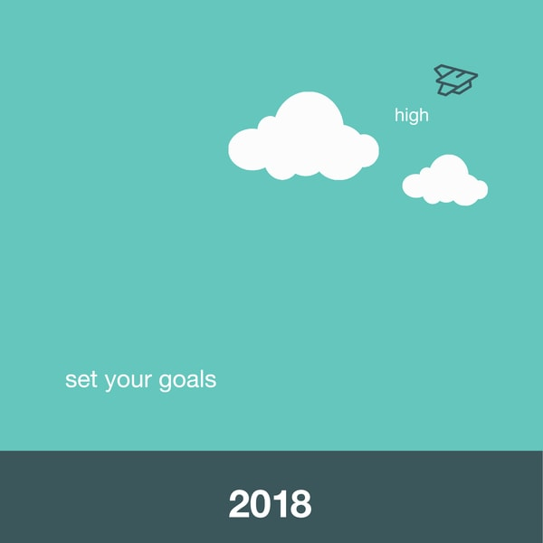
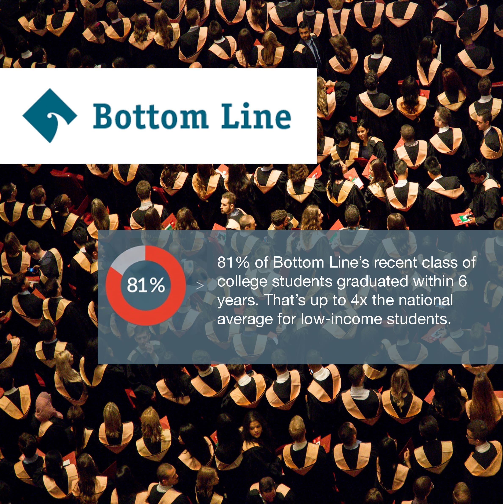
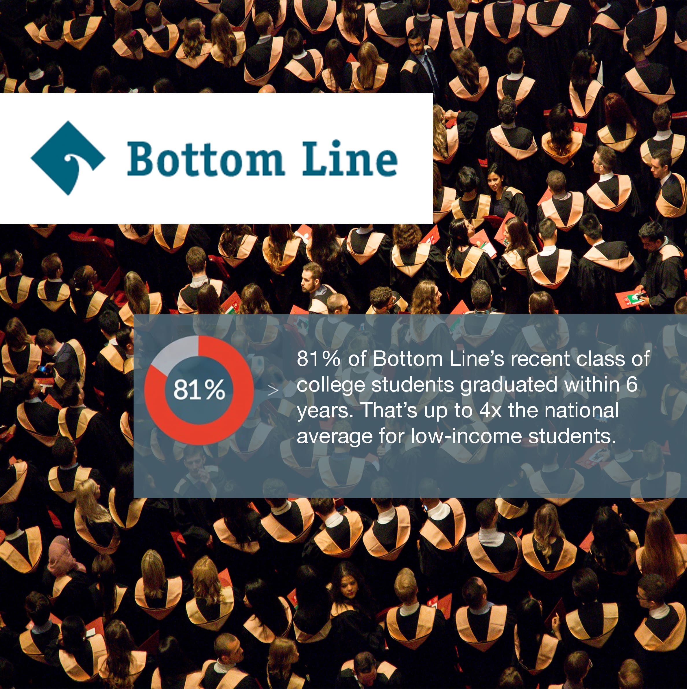
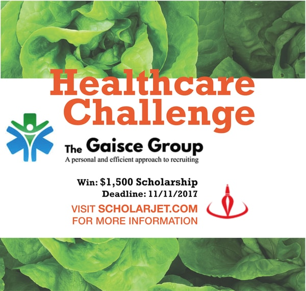
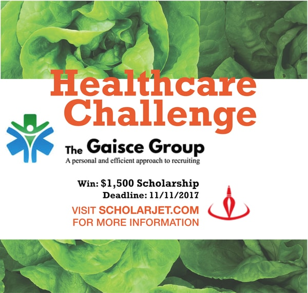
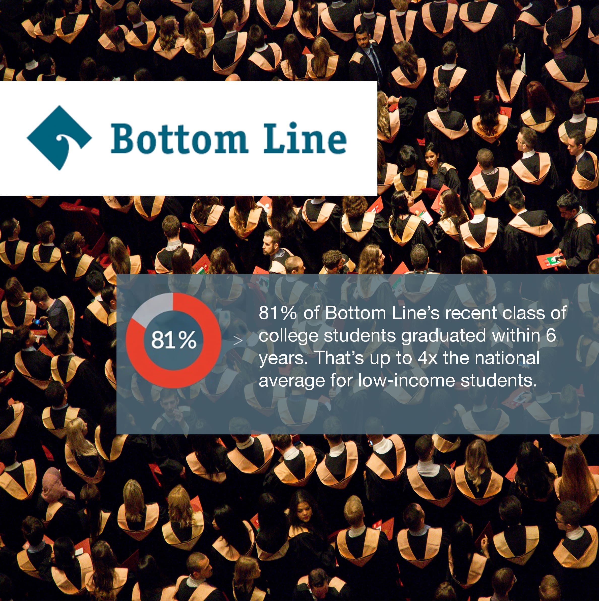
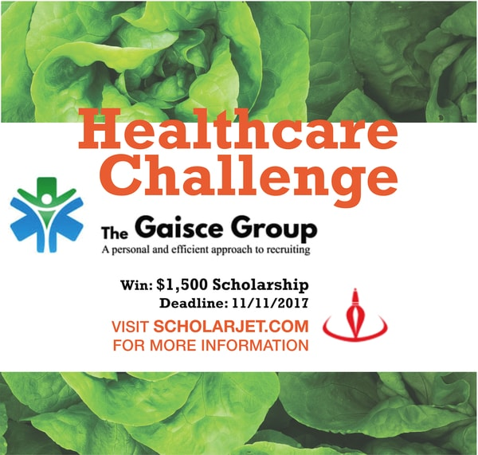

I worked with Northeastern startup
ScholarJet, which brings action-based scholarships to diverse students. As a scholarship recipient
myself, I felt drawn to their cause, so I joined their marketing and social media team.
I was in charge of designing and posting daily Instagram posts to inform high school students in the Boston
area about new challenges, challenge sponsors, and relevant statistics about education.
The Challenge: A diverse audience
My posts were being seen by high school students as well as by current and future sponsors. With the viewer ages ranging from 14 to 40, it was difficult to know whether to make the posts relatable to young people by using memes, or to make them more professional. An appropriate online brand was important, but student engagement on social media was crucial since Instagram was their primary channel for learning about ScholarJet's scholarship opportunities.
If I could improve my approach in the future, I would visit students at their schools to understand them better; and would have shown them some posts to see their reactions.


 



 


